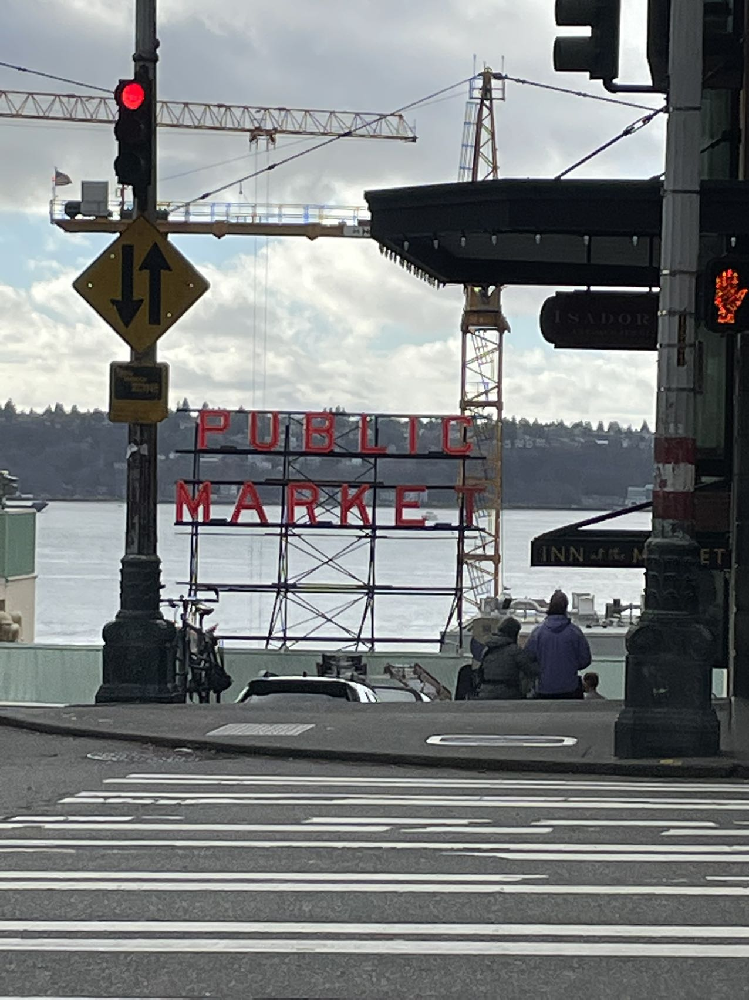
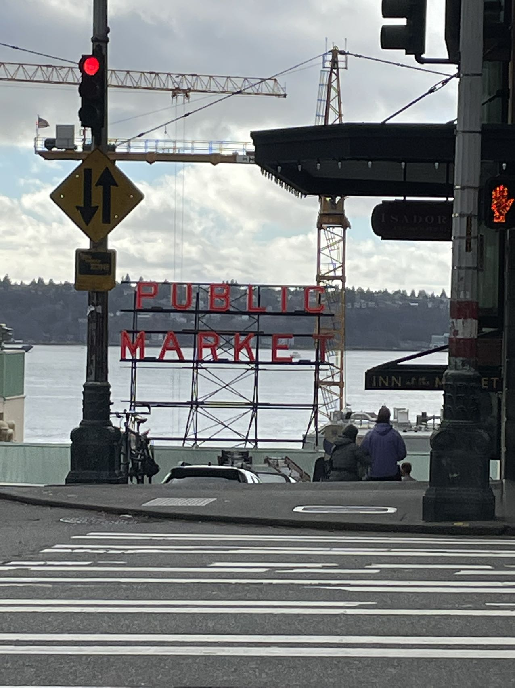

my favorite movie: Click here to visit it is a chinese movie, and this movie talks about a sad story. The film is based on Li Haibo's long online post "The Girlfriend I've Been Running With for Ten Years is Getting Married Tomorrow", which tells the story of Lv Qin Yang and his girlfriend Ling Yiyao's rocky love story from their high school days at the age of 16 to the reality they face after entering society.
 

I like Jazz Dacning and hippop dancing.